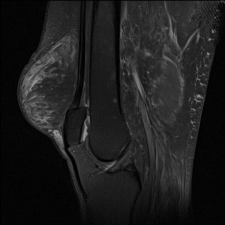
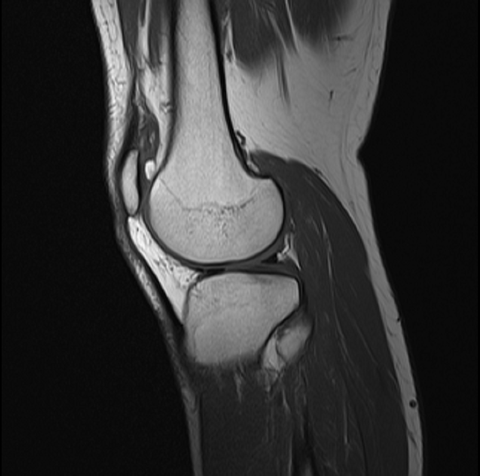
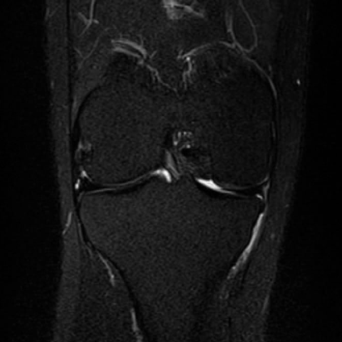
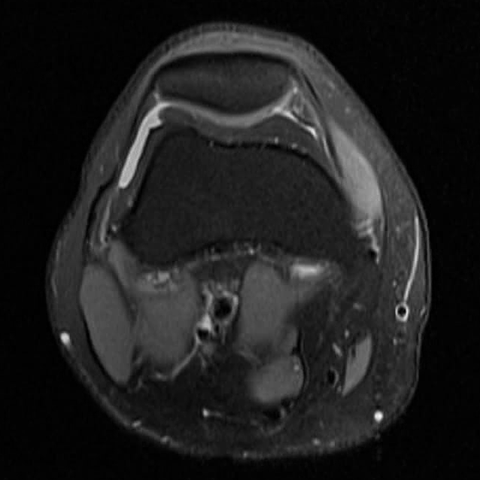
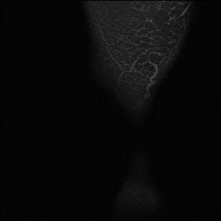
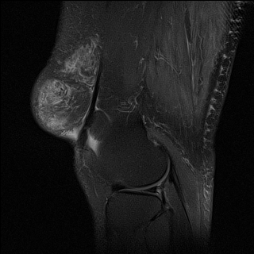
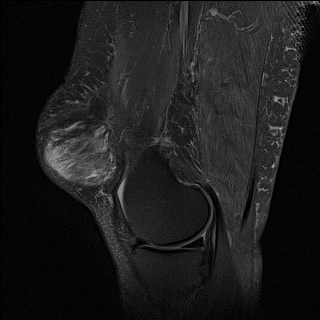
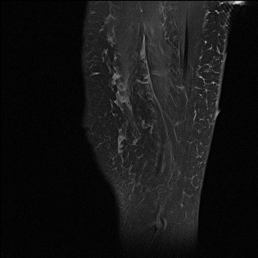

One study, several series, twelve noisy targets
The input is not a single image. Each study holds several MRI series — stacks of 20–40 slices taken in a given plane with a given contrast. The output is twelve independent probabilities, scored by ROC AUC per finding and averaged with equal weight.
1.1What a study looks like
I reduce every study to five fixed "slots". Fluid-sensitive sequences make swelling and tears bright; the others show anatomy. Not every study has all five, so a missing slot stays empty and is masked — another sequence is never substituted into it.

real slice · KneeMRI
real slice · Commons
real slice · Commons
real slice · CommonsAll five cards show real slices from openly licensed sources: sagittal fluid-sensitive from the KneeMRI dataset (Clinical Hospital Centre Rijeka, CC BY-NC-ND 4.0, unmodified); sagittal T1, coronal fluid-sensitive and axial from Ptrump16 on Wikimedia Commons (CC BY-SA 4.0; cropped and resized by me, shared under the same licence); coronal T1 from KMAR-50K by Yuting Wang and Feng Shi (CC BY 4.0; resized). None of these images are competition data or were used for training.
A series is a stack of parallel slices through the knee. Below are five of the 32 slices in one sagittal series, from one side of the knee to the other. The outer slices show mostly soft tissue; the joint, cartilage and ligaments appear in the middle — which is why the model has to look at many slices, not one.





1.2The twelve findings
The targets range from common (effusion, osteoarthritis) to rare and small (fractures). Each one counts equally in the score, so a model that ignores the rare findings is punished.
1.3Where the labels come from
This is the harder part. Only 58 of the 4,407 training studies were labelled by radiologists. Everything else comes with a free-text report, from which participants extracted labels with language models. The task is therefore weakly supervised: validation measures agreement with report-derived labels, not clinical accuracy.